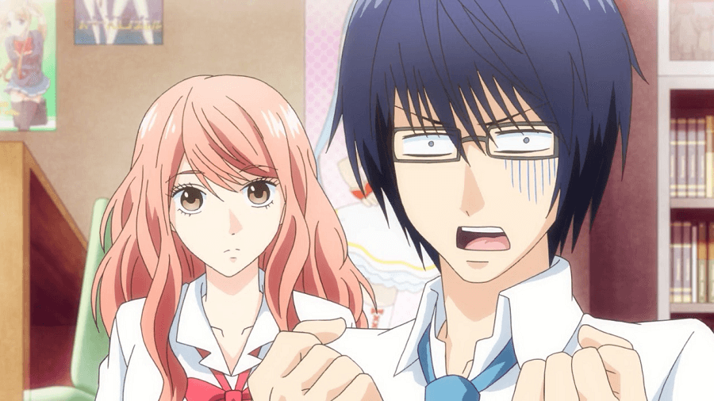
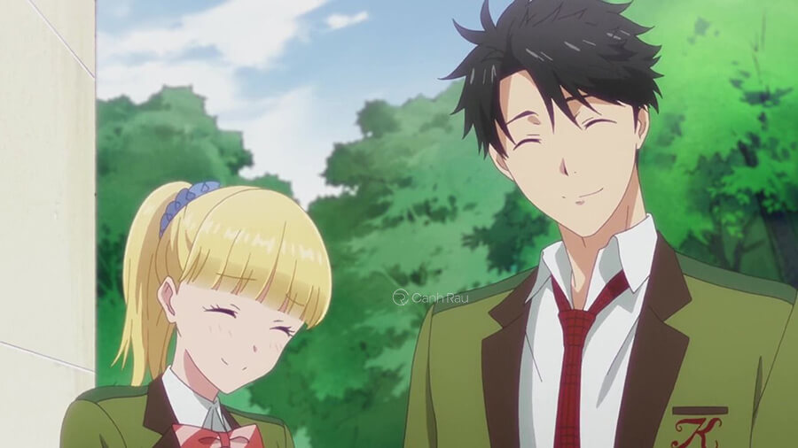
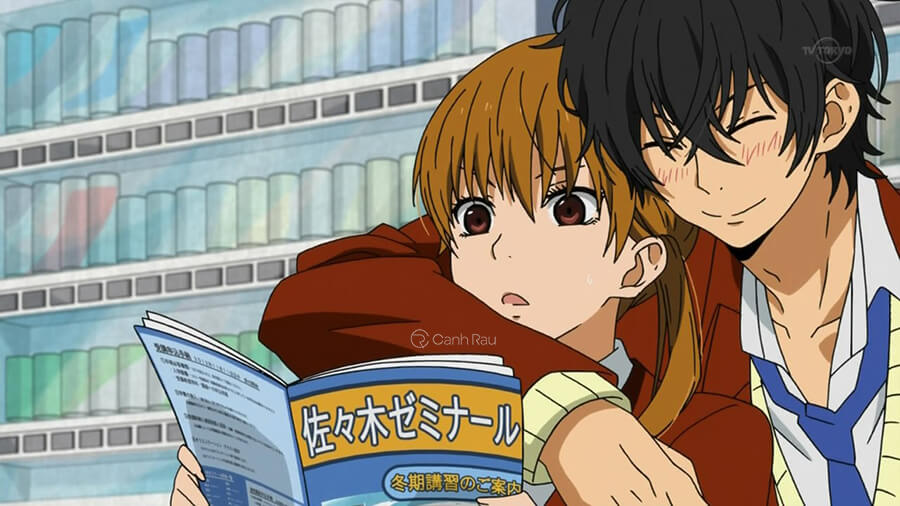
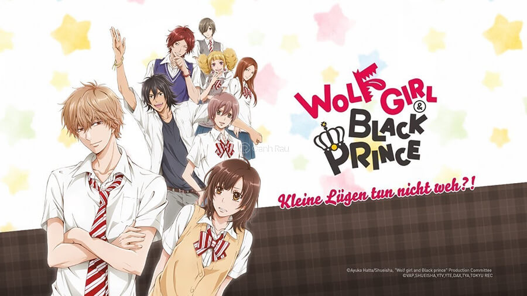
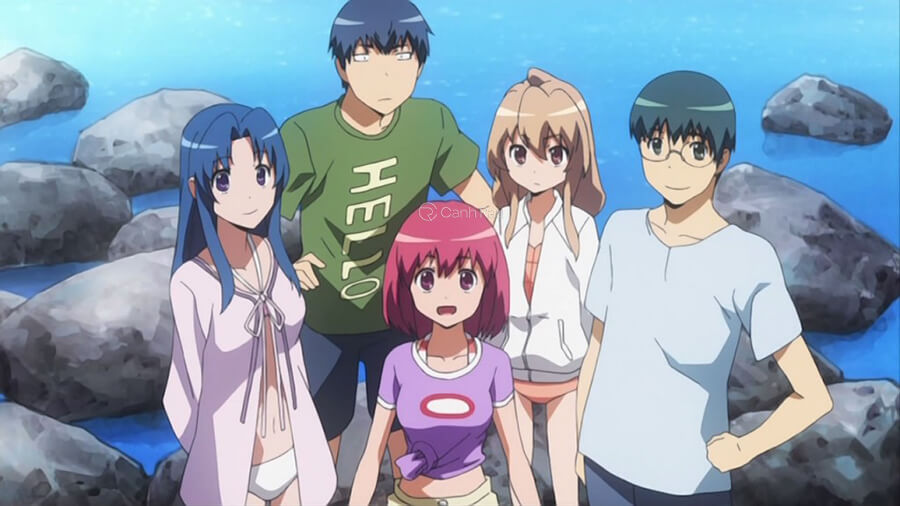
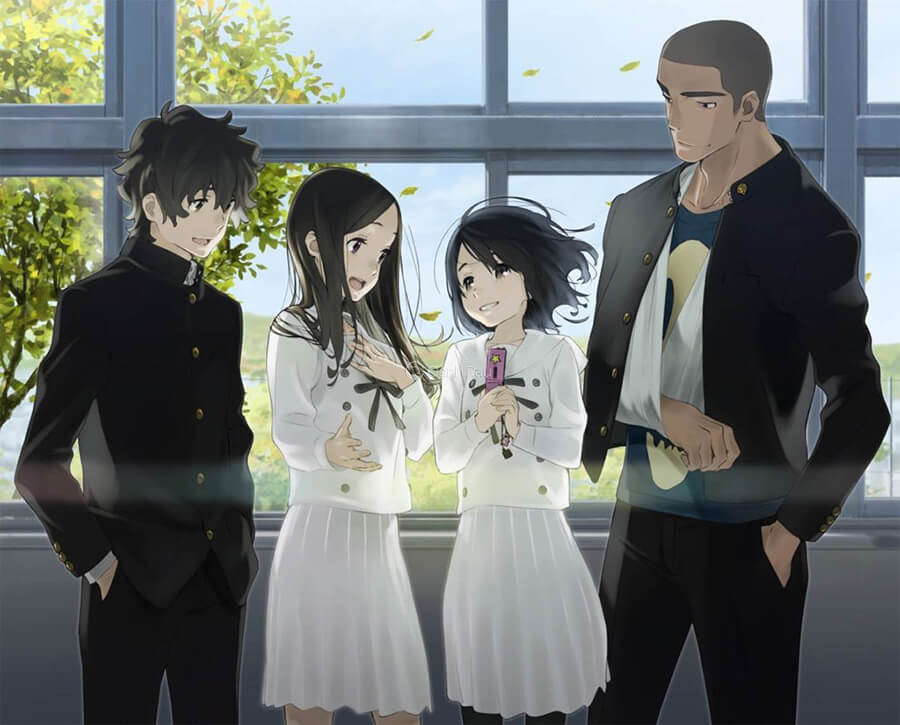
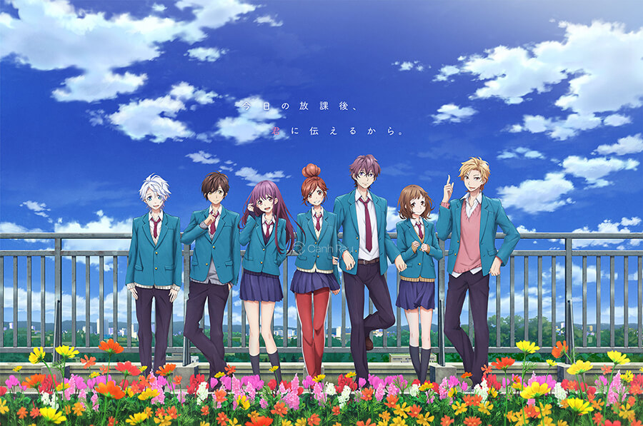
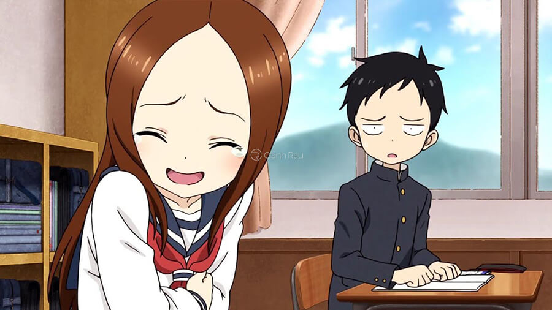
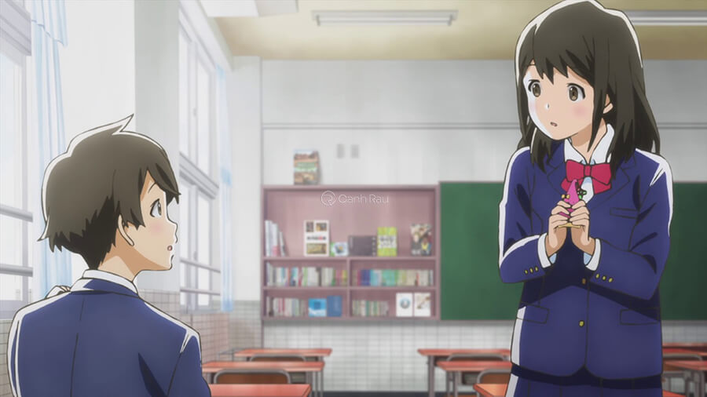
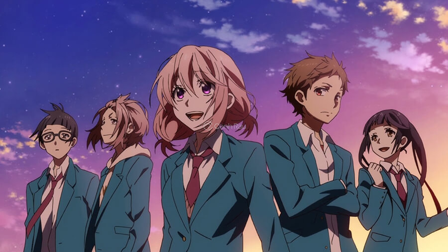

-Mở đầu cho series phim anime học đường lãng mạn là bộ Bạn Gái 3D, phim kể về câu chuyện của Tsutsui Hikari là một anh chàng Otaku, có lối sống và tính cách lập dị tách biệt với xã hội, suốt ngày chỉ biết đến game và xem anime. Một ngày nọ, cậu vì đi học muộn mà bị phạt dọn dẹp vệ sinh hồ bơi của nhà trường cùng với Igarashi Iroha. Hikari là người không thích tiếp xúc với con gái đời thực nên khi bị phạt cùng Iroha cậu cực kì rất ghét.
-Iroga là một học sinh cá biệt đã từng bỏ học tuy nhiên lại rất thẳng thắn và lương thiện đối với Hikari. Sau nhiều lần tiếp xúc và cùng nhiều rắc rối xảy ra, cuối cùng thì Iroga lại trở thành bạn gái 3D ngoài đời thực theo mong muốn của Hikari.

Bộ anime về tình cảm học đường Bạn Gái 3D
-Mọi chuyện sẽ thú vị ra sao khi có một cô bạn gái là 3D đời thực của anh chàng hay mơ mộng Hikari này, và 6 tháng nữa bạn Iroga lại phải chuyển trường. Hãy theo dõi phim để biết rõ thêm.
-Tada Chưa Biết Yêu là bộ phim anime tình cảm học đường hấp dẫn kể về anh chàng Tada Mitsuyoshi một học sinh cao trung học và cũng là một thành viên trong câu lạc bộ nhiếp ảnh của trường nhưng chưa có lấy một mảnh tình vắt vai.
-Trong một lần đang mê mẩn chụp cảnh hoa anh đào, cậu bắt gặp Teresa Wagner – là cô nàng du học sinh đến từ Luxembourg ngây thơ trong sáng, cô bé đang bị lạc khỏi đoàn du lịch đi tham quan Nhật Bản của bình. Tada đã giúp đỡ và đưa cô bé về quán cà phê của gia đình mình, thật trùng hợp rằng Teresa lại trọ gần nhà cậu. Và từ đây, câu chuyện tình yêu của họ được viết lên.

Bộ anime chuyện tình yêu lãng mạn học đường
-Câu chuyện trong Quái Vật Nhỏ Của Tôi tập trung kể về mối quan hệ của Shizuki Mizutani một cô nàng chỉ biết đến việc học và tập trung cho những kế hoạch của tương lai còn mọi thứ khác đều không quan tâm. Shizuki có biệt danh là Băng Khô và nổi tiếng trong trường với biểu cảm lạnh lùng. Mọi chuyện bắt đầu khi Shizuki được giao nhiệm vụ gửi bản in đến nhà Haru, là cậu bạn ngồi cạnh trong lớp nhưng rất ít đi học.
-Haru Yoshida không có nhiều bạn bè, cậu nổi tiếng là kẻ gây rối bạo lực như một quái vật hung bạo không kiểm soát nhưng lại rất tốt bụng và hiền lành. Khi gặp Shizuki, cậu đã tuyên bố rằng cô sẽ là bạn của cậu, cô cũng khá ấn tượng với sự thiếu hiểu biết của Haru, nhưng cũng phải một thời gian sau này cô mới nhận ra được tình cảm của mình đối với cậu là gì.

Quái Vật Nhỏ Của Tôi anime học đường hay
-Nàng Sói Và Hắc Hoàng Tử kể về câu chuyện của Erika Shinohara – cô nữ sinh trung học vì muốn gia nhập vào hội bạn mới mà nói dối rằng mình đã có bạn trai. Vì vậy, khi họ được yêu cầu chứng minh bằng một hình ảnh thì cô đã lựa chọn chụp một chàng trai vô tình gặp trên phố, thật không may người mà cô chụp Kyouya Sata là một anh chàng nổi tiếng tốt bụng ở cùng trường với cô.
-Để cố gắng mình không bị phát hiện và tránh sự chế giễu của nhóm bạn, Erika đã giải thích và nhờ Kyouya giúp mình đóng giả làm bạn trai. Tuy nhiên cậu ta đã đưa ra một điều kiện với cô là Erika phải trở thành Wolf Girl của anh đổi lại anh mới giúp.

Bộ anime tình cảm học đường lãng mạn nhất
-Sự thất vọng của Erika về Kyouya khi phát hiện đằng sau vẻ bề ngoài tốt bụng, đẹp trai là một nhân cách trái ngược với nội tâm tàn bạo và trái tim đen tối. Mặc dù không hài lòng, nhưng Erika dần bị thu hút và có cảm tình với vẻ đẹp trai của Kyouya. Cô đã từ bỏ trở thành Wolf Girl sau một lần hiểu nhầm nhưng anh thì đã tìm cách để cô trở thành bạn gái thật sự của mình.
-Trong khoảng thời gian trung học, hai người đã trở thành một cặp và cùng nhau trải qua thanh xuân. Hãy theo dõi phim anime học đường hấp dẫn này để tìm hiểu cái kết cho chuyện tình Nàng Sói Và Hắc Hoàng tử.
-Ryuuji Takasu trong Cặp Mắt Sát Thủ là một học sinh trung học, tốt bụng và hiền lành, cậu rất yêu thích công việc trong nhà nhưng trái với bản chất tốt bụng đấy Ryuuji Takasu lại có khuôn mặt đáng sợ và ánh mắt giống một kẻ sát thủ nên luôn bị coi là kẻ tội phạm.
-Taiga Aisaka là một cô học xinh, dễ thương và mong manh nhìn trông có vẻ giống búp bê nhưng lại được trang bị bởi một thanh kiếm katana và tính cách rất phong kiến. Cô được mệnh danh trong trường với cái tên là Hổ Palmtop.
-Taiga có hai cô bạn thân tên là Kushieda Minori, Kitamura Yusaku và cũng là người học cùng lớp với Ryuuji. Khi Ryuuji phát hiện Taiga có cảm tình với Yusaku và Taiga cũng biết được Ryuuji thích Minori. Hai người họ đã nghĩ cách sắp xếp để giúp cho người kia có thể tiếp cận được với người thương của mình. Từ đây mở ra nhiều tình huống hài hước của các cặp đôi để tạo nên mối tình của nhau.

Bộ phim anime tình cảm học đường lãng mạn nhất
-Tiếng Hát Từ Trái Tim là câu chuyện xảy ra ở một thành phố nhỏ của Nhật Bản, mở đầu bằng giấc mơ cổ tích của cô bé tên Naruse Jun mong được một lần bước vào tòa lâu đài tráng lệ nằm trên đỉnh đồi nhưng ngoài đời thực đây chỉ là một khách sạn tình yêu.
-Vào một ngày cô đang ngắm nhìn khách sạn từ xa thì cô bắt gặp cha mình đang cùng đi xe với một người phụ nữ đẹp. Trong tưởng tượng thơ ngây của cô, thì nó trở thành hình ảnh của một chàng hoàng tử cưỡi một con bạch mã cùng song hành là một nàng công chúa xinh đẹp bước ra từ lâu đài cổ tích. Jun vội vàng chạy về nhà và khoe với mẹ điều mình nhìn thấy và bắt đầu xảy ra bi kịch tan vỡ gia đình của cô. Từ đây trong lòng Jun luôn tự trách bản thân và nỗi đau đó vẫn luôn đeo bám cô cho đến khi cô bé vào trung học.

Bộ anime về thời niên thiếu hay nhất Nhật Bản
-Vào năm hai trung học, Jun được thầy giáo chỉ định là thành viên ban chấp hành của hội giao lưu gắn kết cộng đồng. Trong nhóm đồng hành cùng cô là 3 người bạn, Sakagami Takumi là một cậu bé thiếu nhiệt huyết không bao giờ thổ lộ nỗi lòng cho người khác, Tazaki Daiki tùng là con át chủ bài cho đội bóng chày nhưng vì cánh tay bị gãy nên tuyệt vọng và Nitonat Suki là thành viên trong đội cổ vũ nhưng buồn chán vì thất tình.
-Liệu rằng với sự giúp đỡ của thầy cô và bạn bè nỗi đau của Jun có được xóa bỏ và giấc mơ về chàng hoàng tử có xuất hiện. Tiếng Hát Từ Trái tim là bộ phim anime điện ảnh về thời niên thiếu ăn khách nhất tại Nhật Bản.
-Em Đã Yêu Anh Từ Rất Lâu kể về câu chuyện tình cảm của Enomoto Natsuki, là một nữ sinh năm cuối của trường trung học phổ thông Sakuragaoka. Cô đã thầm thích cậu bạn học từ thuở nhỏ tên Setoguchi Yuu, nhưng lại không dám thừa nhận trước mặt cậu bạn mà chỉ dám nói là đối tượng thực hành tỏ tình. trong khi đang cố gắng giấu đi tình cảm thật của mình thì một cậu bạn cùng lớp lại tỏ tình với cô.

Em Đã Yêu Anh Từ Rất Lâu bộ anime tình cảm hay nhất
-Trong xuyên suốt bộ phim đều là những cách tỏ tình của các cặp đôi khi còn ngồi trên ghế nhà trường, những bức thư tình giấu tên, những tình cảm không dám thổ lộ. Ở cuối phim, sau khoảng thời gian Natsuki tỏ tình Yuu thì cũng nhận lại được tình cảm của Yuu, sự hạnh phúc nở trên khuôn mặt, cái kết của bộ phim là một cái ôm vui vẻ.
-Anime Nhất Quỷ Nhì Ma Thứ Ba Takagi là phim tình cảm hài hước được chuyển thể từ bộ truyện tranh cùng tên của tác giả Yamamoto Souichirou. Câu chuyện lấy bối cảnh ở trường trung học cơ sở thuộc thị trấn nông thôn tại Nhật Bản. Hai cô cậu bạn học sinh học cùng lớp và ngồi cạnh nhau.
-Takagi là một cô nàng lém lỉnh rất thích trêu chọc Nishikata bằng những cách thả thích đùa cợt. Để đáp trả, cậu bé Nishikata phải luôn tìm cách và lập ra kế hoạch trả thù nhưng tất cả đều thất bại, sau khi cậu biết được nhược điểm của Takagi thì đã tận dụng chúng triệt để. Trong những lần hiếm hoi, Takagi đã để thua nhưng Nishikata lại không cảm thấy rằng mình thực sự chiến thắng. Có lẽ cậu đã thật sự bị đổ sau những câu thả thính của cô.

Nhất Quỷ Nhì Ma Thứ Ba Takagi anime hài hước tình cảm học trò
-Chuyện Tình Tuổi Thanh Xuân lấy bối cảnh ở một ngôi trường cấp ba, phim kể về câu chuyện tình của cặp đôi Azumi Kotaro là thành viên của hội học sinh văn học với ước mơ trở thành một tiểu thuyết gia và cô bạn Mizuno Akane là một thành viên của câu lạc bộ điền kinh.
-Hai người đều là bạn cùng lớp và cũng để ý nhau, dần dần nảy sinh tình cảm nam nữ. Vào một ngày nọ, Kotaro quyết định thổ lộ lòng mình cho Akane từ đây xuất hiện những buổi hẹn vụng trộm trốn học bắt đầu xảy ra. Tuy nhiên rằng không lâu sau đó vì công việc của cha Akane thay đổi buộc gia đình phải chuyển đi và cô phải chuyển trường theo. Đối mặt với việc phải yêu xa, Akane cảm thấy lo lắng cho chuyện tình của mình.

Chuyện Tình Tuổi Thanh Xuân bộ anime vườn trường
-Chờ Đợi Phút Giây Em Yêu Tôi là phần hai của series phim hoạt hình mang tên Zutto Mae Kara Suki Deshita. Bộ phim xoay quanh câu chuyện của một nhóm bạn trung học đang phải tìm cách bày tỏ tình cảm của mình cho đối phương biết.

Bộ anime tình cảm học đường hay nhất
-Mở đầu phim là hình ảnh của Hina Setoguchi đã va phải cây chổi quét nhà của Koyuki Ayase và ngã sấp mặt và để lộ ra phần nhạy cảm của mình. Cô lập tức coi anh như là một kẻ biến thái và đuổi theo anh suốt hành lang để nhận được lời xin lỗi. Trong khi đang khống chế cậu ta vào tường thì Natsuki Enomoto là một học sinh lớp trên lại gần và đã nhận ra cậu ấy là bạn cùng lớp, khiến Hina đã phải xin lỗi Koyuki vì đã có hành vi không đúng với cậu.
-Và ngay sau, đó cậu ta đã tha thứ cho cô ngay lập tức, điều này đã làm cho Hina có ấn tượng sâu sắc đối với anh. Đánh dấu mở đầu cho tình yêu của cô dành cho Koyuki. Có một cảnh trong phim Hina tỏ tình với Koyuki nhưng bị anh từ chối, đồng thời là Katona một cậu bạn từ thuở nhỏ lại có tình cảm với cô.